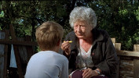

2002 / Dona Cristina perdeu a memória
por Casa 30 anos em 05 de dezembro de 2017
2002: Um ano para não esquecer
Muita gente se preocupou antecipadamente com o que poderia ocorrer às 20:02 do dia 20/02 de 2002 - um raro acontecimento matemático, um minuto palíndromo de um dia palíndromo de um ano palíndromo. Mas o minuto passou rápido, e nenhum acontecimento digno de nota foi registrado. Se o ano de 2002 não foi esquecido, foi por outros motivos, e outros momentos.
| Em junho, Brasil e Alemanha, os maiores vencedores do futebol no século anterior, se enfrentam pela primeira vez numa Copa do Mundo, e justamente na final da primeira Copa do novo século: daquela vez, deu Brasil, 2x0. Em janeiro, o Euro se torna a moeda oficial da maioria dos países da União Europeia. Em outubro, com mais de 53 milhões de votos, Lula é o primeiro operário a se tornar presidente do Brasil. |
A mania dos reality shows se alastra: além do fenômeno Big Brother, surge o American Idol, primeiro de muitos no formato de descoberta de cantores. Dirigido por Fernando Meirelles, "Cidade de Deus" se torna um sucesso de público e crítica, com mais de 3 milhões de espectadores. A música se despede de John Entwistle, Ray Conniff e Joe Strummer, e o cinema perde o grande Billy Wilder.
Na Casa, tivemos um ano bem movimentado e de muito trabalho: lançamos nosso segundo longa, o primeiro dirigido por Jorge Furtado, "Houve uma vez dois verões", rodamos a segunda temporada da série "Contos de inverno" para a RBSTV, com seis novos episódios, e ainda o curta "Dona Cristina perdeu a memória", dirigido pela Ana Luiza Azevedo. Motivos de sobra para não esquecer de 2002.
*****
2002 / Dona Cristina perdeu a memória (13 min)
Direção: Ana Luiza Azevedo
|  | Antônio, um menino de 8 anos, descobre que sua vizinha Cristina, de 80, conta histórias sempre diferentes sobre a sua vida, os nomes de seus parentes e os santos do dia. E Dona Cristina acredita que Antônio pode ajudá-la a recuperar a memória perdida. |
Produção Executiva: Nora Goulart e Luciana Tomasi
Roteiro: Ana Luiza Azevedo, Jorge Furtado e Rosângela Cortinhas
Direção de Fotografia: Alex Sernambi
Direção de Arte: Fiapo Barth
Música: Gustavo Finkler
Montagem: Giba Assis Brasil
Elenco Principal: Lissy Brock, Pedro Tergolina
Uma Produção da Casa de Cinema PoA
MAIS INFORMAÇÕES
Disponível de 05 a 11/dez
Legendas em inglês, espanhol, francês e português
**********
MOSTRA CASA DE CINEMA: 30 ANOS, 30 FILMES
1987 / O dia em que Dorival encarou a guarda
1988 / Barbosa
1989 / Ilha das flores
1990 / Memória
1991 / O vampiro de Novo Hamburgo (e outros)
1992 / Esta não é a sua vida
1993 / Ventre livre
1994 / A matadeira
1995 / Deus ex-machina
1996 / Um homem sério (disponível até 05/dez)
1997 / Anchietanos (disponível até 06/dez)
1998 / Trampolim (disponível até 07/dez)
1999 / Três minutos (disponível até 08/dez)
2000 / O sanduíche (disponível até 09/dez)
2001 / Dia de visita (disponível até 10/dez)
2002 / Dona Cristina perdeu a memória (disponível até 11/dez)